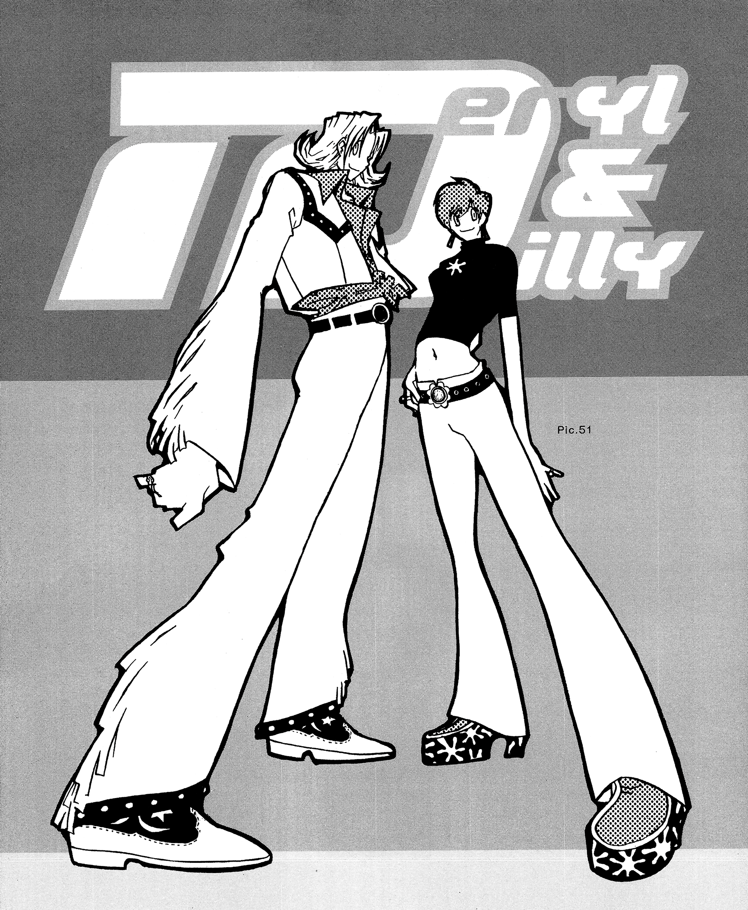

- Request
- Commissioned by xoxo-otome! Thank you! 🤞
- Source Text
- Trigun Archives (2011), page 61, Pic. 51
トライガンアーカイブス Pic.51 - Links
- Tumblr post by @xoxo-otome / Clean scans by Team Overhaul (used on this page)
Hover over underlined text to see my comments.
Pic. 51

While drawing this, I was thinking about how MillyMery didn’t have many outfit changes, even though they’re girls. It is true that under those circumstances they weren’t able to dress up much, but also it is a trope of manga to differentiate characters by their signature outfits, so it’s sort of unavoidable. I really like this one, including the degree of stylization.
Translator's note
Milly and Meryl's signature duo name is "milimeri" in canon, but it probably sounds like the ship name to English speakers which is not Nightow's explicit intention.